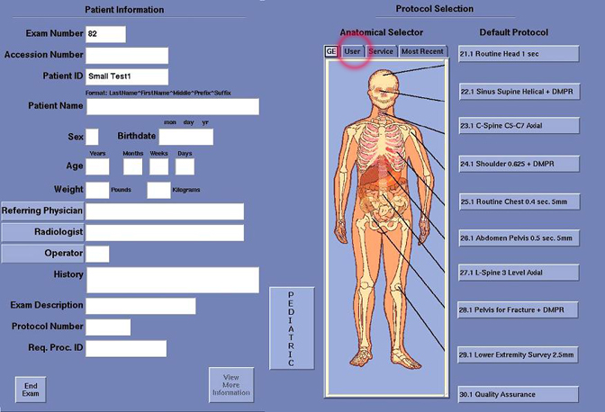

Operating Documentation
Direction 5307452-8EN, Rev# 4
Discovery CT750 HD Service Methods - Adv
Operating Documentation |
| Last Revision | 21 August 2008 |
| POTENTIAL FOR INJURY FROM FALLING | |
| LADDER CAN TIP CAUSING FALL | |
| Make sure ladder is locked in place on level surface |
| POTENTIAL FOR EYE INJURY | |
| LOOSE MATERIALS FALLING FROM THE CEILING CAN CAUSE EYE DAMAGE. | |
| Wear PPE Eye protection |
These instructions refer to any GE-supplied ceiling-mounted object.
Acquire and place an appropriately-sized ladder under the ceiling-mounted component.
Remove any ceiling covers and ceiling tiles to access the pedestal base.
Verify that the mounting plate and pedestal base are securely bolted.
If the mounting plate is loose, inform the customer to have their contractor check and repair the structural integrity.
If the pedestal base is tight, confirm that the bolts that were marked at install have not moved.
If the bolts were not marked at install, mark the bolt and plate using a permanent marker.
If any loose hardware is detected, use a torque wrench and re-secure. Add a new visual inspection mark.
Inspect the arm assembly and confirm that the assembly is tight.
If the arm assembly is loose, refer to the installation manual and tighten.
Check the component end and confirm that the mounting hardware is tight. Tighten any loose hardware.
Reinstall all removed covers and ceiling tiles and store the ladder.
Follow the vendor-supplied installation manual for your Nemoto injector.
| NOTE: | Non-Nemoto injectors are not covered. This is the customer's responsibility. |
Verify that the following cables are connected to the gantry option panel:
IEC power plug
Cat 5 cable
Lemo connector
Turn on the monitor.
Follow the monitor self-test setup procedure using the document shipped with the system.
On the setup screen, enter the following selections:
New Patient: GE Test
On the Protocol Selection screen, select theUser tab (see Illustration 1).
On the User tab, select [Chest] .
On the scan monitor (on the dark blue bar) select: Gating On
Look for the following diagnostics to display (see Illustration 2):
Heart rate on the gantry display board
Cardiac pulses shown on the screen
Gating BPM displayed on the screen
ECG trace highlighted on the screen
Illustration 1: Protocol Selection Screen

Illustration 2: Cardiac Scan Screen